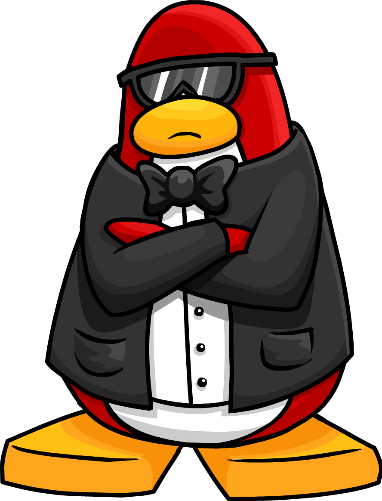

Jeg nekter å skrive en tekst om noe som jeg gjør i et annet fag. Å skrive en tekst om club penguin kan jeg gjøre. Club penguin var et spill som ble lagt ned i 2017. I club Penguin skulle man være ute på pingvin øya å møte og få nye venner. Spillet var meget populært blant annet av barn, men voksne som ikke hadde noe annet å gjøre noe annet spilte også klubb pingvinos linguini.
Club Penguin var et spill likt av mange. Med over 10+ minispill som kunne spilles i club penguin hvor man kunne ha det gøy i co-op minispill, hvor man sammarbeidet med mange andre pingviner, konkurrerte eller freestylet selv for å bli bedre hver eneste gang. Etter man hadde fulført minispillene så fikk man penger ut ifra hvor bra man hadde gjort det. Disse pengene (coins) kunne da brukes til å adoptere dyrbare puffler, som her var kjæledyr. Møbler, hus, klær, gadgets og masse annet kunne bli kjøpt og brukt av din egne pingvin avatar. Eventyret avsluttet uheldigvis 31.Mars 2017 da spillet ble lagt ned
Pingvin Agent